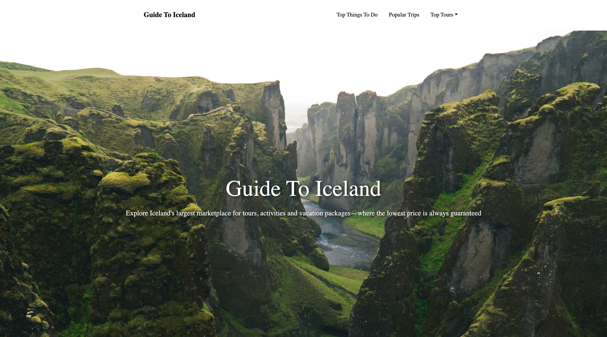
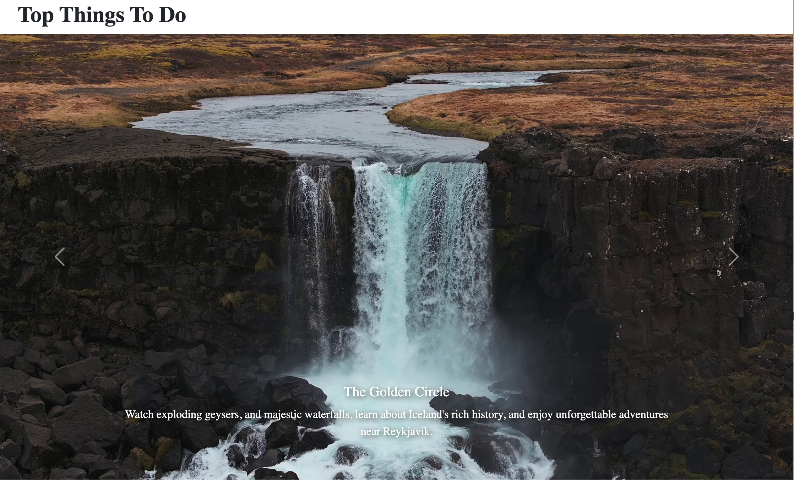
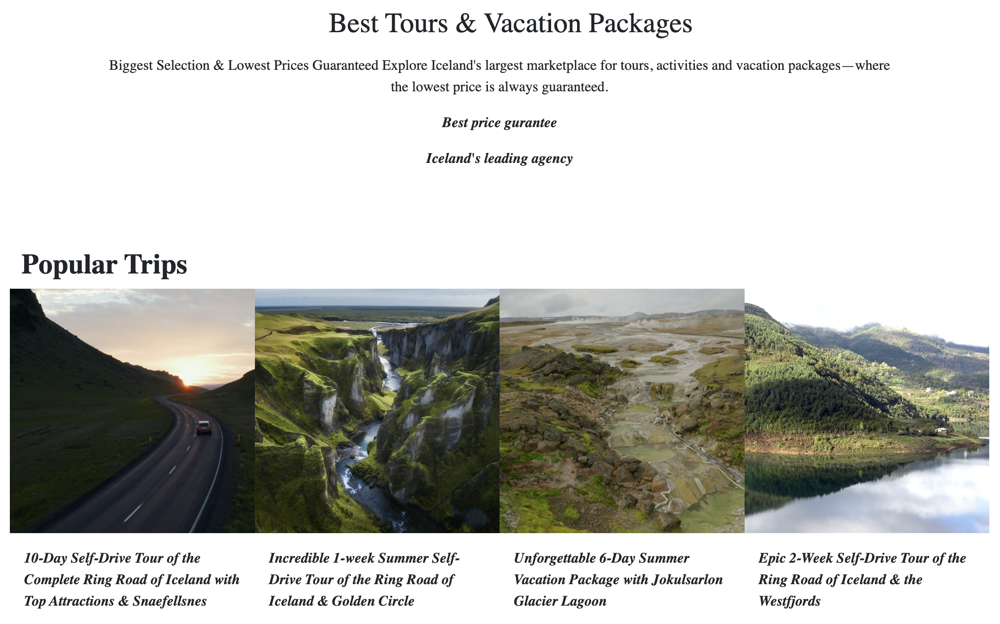

Guide to Iceland
How might we make planning a first trip to Iceland feel inspiring instead of overwhelming?
Overview
Guide to Iceland is a responsive website I designed and built to help travelers explore the country before they go. The layout balances immersive landscape photography with practical, scannable information, and adapts cleanly from desktop to mobile.
From inspiration to itinerary
The homepage leads with the landscapes that make people want to visit, then guides them toward concrete next steps. Clear navigation and consistent section patterns keep long-form travel content easy to move through.
Top things to do
A full-width carousel spotlights signature experiences like the Golden Circle, pairing dramatic photography with a short, scannable caption so each destination makes an immediate impression.

Tours & popular trips
Trip packages sit in a consistent four-up grid, with matching image crops and italic titles that make it easy to compare itineraries at a glance.
